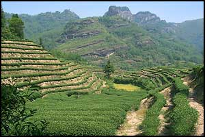

WHITE TEA
A specialty of Fujian province on China's east coast, white tea is one of the most highly prized (yet least known) of the world's teas. Also one of the least processed teas, white tea is produced from specially harvested hair-covered tea leaf buds, which are quickly steamed and fired to prevent oxidation. The infusion produced by white tea is pale, but the flavor is full, smooth and mellow.

TERRACED TEA GARDEN, Fujian province, China
Recent studies at the Linus Pauling Institute have found that white tea may be the best tea of all for fighting cancer. The minimal processing employed during white tea production is believed to be responsible for higher levels of antioxidant polyphenols - which are currently being studied as potential anticarcinogens.
(CLICK THE LINK BELOW TO READ THE REPORT.)
(Click to read the white tea report.)
CLOSE WINDOW